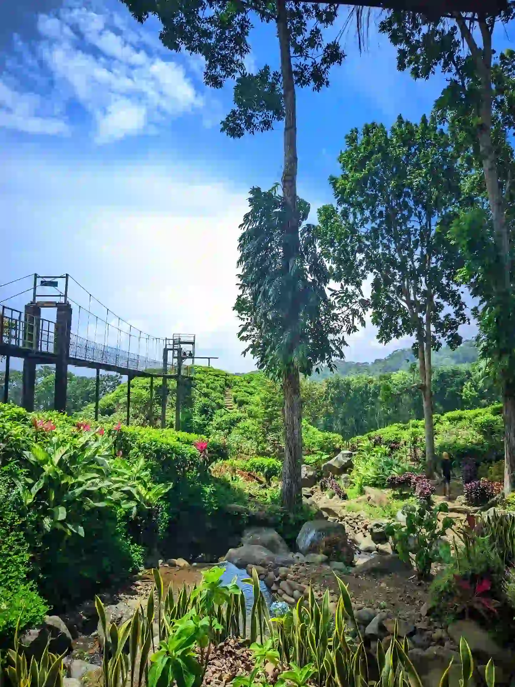

Kebun Teh Gunung Gambir adalah destinasi agrowisata di Jember seluas 183 hektar, berlokasi di Desa Gelang, Kecamatan Sumberbaru, dengan tiket masuk Rp10.000.

Suasana sejuk di Jembatan Layang Klobungan, ikon utama Kebun Teh Gunung Gambir.
Sumber: https://lh3.googleusercontent.com/geougc-cs/AMG9lETITma7-21chtct38ZLTuE-eMiKEXTYgocXE30A_mLAB-kdo-viDB5VCMSDOW_OYySafT9Ejl8uPAaagmB7ZwWxU1QPBvSZTW79QqBp54hKxR_Ccof-q1LU22hEikNGPBqb5DNLMQLvdxA=s3360-w3360-h1924-rwPernah nggak kamu merasa capek luar biasa, tapi bingung mau healing ke mana? Bukan pantai, bukan mall, bukan kafe kekinian yang itu-itu saja. Kadang yang paling dibutuhkan itu cuma udara segar, hamparan hijau sejauh mata memandang, dan suara angin yang bikin pikiran langsung berhenti berisik. Kebun Teh Gunung Gambir di Jember menawarkan tepat hal itu. Sebuah kawasan agrowisata yang berdiri di atas lahan 183 hektar, di ketinggian 900 meter di atas permukaan laut, dengan suasana yang terasa seperti jeda panjang dari rutinitas. Bukan kebetulan tempat ini makin ramai diperbincangkan. Dan bukan kebetulan pula banyak yang menyesal karena baru tahu setelah lama terlewatkan. Kalau kamu sudah sering dengar nama Gunung Gambir tapi belum pernah ke sana, inilah saatnya baca sampai tuntas.
Kebun Teh yang Bukan Sekadar Kebun
Ada yang bilang, berkunjung ke kebun teh itu membosankan. Tidak ada yang bisa dilakukan selain foto-foto. Tapi orang yang bilang begitu kemungkinan besar belum pernah ke Gunung Gambir. Kebun teh ini bukan cuma hamparan tanaman hijau yang dilihat dari balik pagar. Pengunjung bisa masuk, menyusuri jalur, merasakan tekstur tanah perkebunan di bawah kaki, dan melihat langsung bagaimana pemetikan teh dilakukan oleh para petani lokal. Ada dimensi edukasi yang terasa nyata, bukan rekayasa.
Kebun ini dikelola oleh Perkebunan Nusantara XII dan sudah ada sejak masa pendudukan Belanda. Jadi ketika kamu berjalan di sana, kamu sedang menapaki jejak sejarah panjang yang melampaui satu abad. Beberapa fakta dasar yang perlu kamu tahu sebelum datang:
- Lokasi: Desa Gelang, Kecamatan Sumberbaru, Kabupaten Jember, Jawa Timur
- Luas lahan: sekitar 183 hektar
- Ketinggian: 900 meter di atas permukaan laut, di lereng Gunung Argopuro
- Jarak dari pusat kota Jember: sekitar 48 kilometer, waktu tempuh kurang lebih 1 jam 40 menit
- Tiket masuk: Rp10.000 per orang
- Parkir: Rp2.000 (motor), Rp5.000 (mobil)
- Jam buka: 06.00 - 17.00 WIB setiap hari
Apa Saja yang Bisa Dilakukan di Sini?
Ini bagian yang biasanya bikin orang kaget. Ternyata Kebun Teh Gunung Gambir lebih dari sekadar foto-foto lalu pulang. Aktivitasnya cukup variatif, cocok untuk berbagai jenis pengunjung, dari keluarga dengan anak-anak hingga pasangan yang ingin suasana tenang.
- Jembatan Layang Klobungan: Jembatan kayu sepanjang 200 meter ini mengelilingi area perkebunan, memberikan sudut pandang berbeda dari atas hamparan tanaman teh.
- Gazebo Pemandangan: Gazebo dibangun lebih tinggi dari tanaman teh sehingga pandangan tidak terhalang, cocok untuk bersantai tanpa distraksi.
- Spot Foto Instagramable: Tersedia spot kayu berbentuk bintang dan hati yang dirancang ramah lingkungan tanpa merusak tanaman.
- Menyeduh Teh Segar: Pengunjung bisa menikmati teh hijau dan hitam yang dipetik langsung dari kebun, memberikan aroma dan rasa yang autentik.
"Kadang yang paling dibutuhkan itu cuma udara segar, hamparan hijau sejauh mata memandang, dan suara angin yang bikin pikiran langsung berhenti berisik."
Fasilitas Lengkap untuk Berbagai Pengunjung
Gunung Gambir sudah cukup siap untuk pengunjung dari berbagai segmen. Berikut adalah fasilitas yang tersedia:
Untuk yang ingin menginap: Tersedia villa representatif dilengkapi kolam renang dengan harga mulai dari Rp150.000 per malam (termasuk sarapan dan wifi gratis) serta pemandangan langsung ke kebun teh.
Untuk yang ingin camping: Ada camping ground di atas kebun teh yang memberikan sensasi berkemah di "negeri di atas awan", lengkap dengan kolam renang dan jogging track.
Fasilitas pendukung lainnya: Warung makan khas daerah, tempat parkir luas, toilet bersih, dan berbagai spot foto yang tersebar merata.
Kenapa Tempat Ini Penting bagi Masyarakat?
Keberadaan wisata agro seperti Gunung Gambir memberikan dampak ekonomi nyata bagi warga lokal. Para petani teh memiliki mata pencaharian yang terjaga, warung makan dikelola warga setempat, dan lapangan kerja diisi oleh masyarakat desa. Pemerintah Kabupaten Jember menegaskan bahwa pengembangan Wisata Agro Rengganis merupakan bagian dari strategi pengelolaan wisata berkelanjutan berbasis potensi lokal.
Kapan Waktu Terbaik untuk Berkunjung?
Datang pagi, antara pukul 06.00 hingga 08.00, adalah pilihan terbaik. Udara masih sangat segar, kabut tipis kadang masih menggantung, dan momen ini waktu terbaik untuk memotret. Kalau tujuannya melihat aktivitas pemetikan teh, lebih baik datang di hari kerja agar suasananya lebih tenang.
Potensi Edukasi yang Luar Biasa
Anak-anak bisa melihat langsung bagaimana tanaman teh tumbuh, dipetik, dan diproses. Ini jauh lebih efektif dibanding membaca buku teks. Pengalaman langsung meninggalkan kesan yang bertahan lebih lama, sehingga mereka bisa lebih menghargai setiap tegukan teh yang mereka nikmati.
5 FAQ Seputar Gunung Gambir
1. Apakah cocok untuk kunjungan bersama anak kecil?
Sangat cocok. Area ini aman dan bisa menjadi pengalaman belajar langsung tentang pertanian teh dengan area bermain yang tersedia.
2. Apakah bisa berkunjung tanpa menginap?
Bisa. Kawasan wisata buka setiap hari dari pukul 06.00 hingga 17.00 WIB untuk pengunjung harian.
3. Apakah ada pemandu wisata yang tersedia?
Pengelola menyediakan layanan pemandu untuk menemani menyusuri kebun dan menjelaskan proses pemetikan teh secara langsung.
4. Bagaimana kondisi jalan menuju lokasi?
Jalan sudah memadai untuk motor dan mobil, namun perlu kehati-hatian karena lebar jalan yang tidak terlalu besar.
5. Apakah produk teh bisa dibeli sebagai oleh-oleh?
Ya. Tersedia produk teh asli Gunung Gambir yang bisa dibeli langsung sebagai kenang-kenangan.
Sumber: ppid.jemberkab.go.id, Radar Jember (Jawa Pos), dan Traveloka.